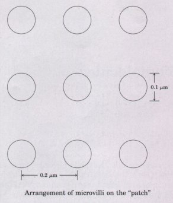

Cells, the structural and functional units of living organisms, are of microscopic dimensions. Their small size, combined with convolutions of their surfaces, results in high surface-to-volume ratios, facilitating the diffusion of fuels, nutrients, and waste products between the cell and its surroundings. All cells share certain features: DNA containing the genetic information, ribosomes, and a plasma membrane that surrounds the cytoplasm. In eukaryotes the genetic material is surrounded by a nuclear envelope; prokaryotes have no such membrane.
The plasma membrane is a tough, flexible permeability barrier, which contains numerous transporters as well as receptors for a variety of extracellular signals. The cytoplasm consists of the cytosol and organelles. The cytosol is a concentrated solution of proteins, RNA, metabolic intermediates and cofactors, and inorganic ions, in which are suspended various particles. Ribosomes are supramolecular complexes on which protein synthesis occurs; bacterial ribosomes are slightly smaller than those of eukaryotic cells, but are similar in structure and function.
Certain organisms, tissues, and cells offer advantages for biochemical studies. E. coli and yeast can be cultured in large quantities, have short generation times, and are especially amenable to genetic manipulation. The specialized functions of liver, muscle, and fat tissue, and of erythrocytes, make them attractive for the study of specific processes.
The first living cells were prokaryotic and anaerobic; they probably arose about 3.5 billion years ago, when the atmosphere was devoid of oxygen. With ~he passage of time, biological evolution led to cells capable of photosynthesis, with O2 as a byproduct. As O2 accumulated, prokaryotic cells capable of the aerobic oxidation of fuels evolved. The two major groups of bacteria, eubacteria and archaebacteria, diverged early in evolution. The cell envelope of some types of bacteria includes layers outside the plasma membrane that provide rigidity or protection. Some bacteria have flagella for propulsion. The cytoplasm of bacteria contains no membrane-bounded organelles but does contain ribosomes and granules of nutrients, as well as a nucleoid which contains the cell's DNA. Some photosynthetic bacteria have extensive intracellular membranes that contain light-capturing pigments.
About 1.5 billion years ago, eukaryotic cells emerged. They were larger than bacteria, and their genetic material was more complex. These early cells established symbiotic relationships with prokaryotes that lived in their cytoplasm; modern mitochondria and chloroplasts are derived from these early endosymbionts. Mitochondria and chloroplasts are intracellular organelles surrounded by a double membrane. They are the principal sites of ATP synthesis in eukaryotic, aerobic cells. Chloroplasts are found only in photosynthetic organisms, but mitochondria are ubiquitous among eukaryotes.
Modern eukaryotic cells have a complex system of intracellular membranes. This endomembrane system consists of the nuclear envelope, rough and smooth endoplasmic reticulum, the Golgi complex, transport vesicles, lysosomes, and endosomes. Proteins synthesized on ribosomes bound to the rough endoplasmic reticulum pass into the endomembrane system, traveling through the Golgi complex on their way to organelles or to the cell surface, where they are secreted by exocytosis. Endocytosis brings extracellular materials into the cell, where they can be digested by degradative enzymes in the lysosomes. In plants, the central vacuole is the site of degradative processes; it also serves as a storage depot for a variety of side products of metabolism and maintains cell turgor.
The genetic material in eukaryotic cells is organized into chromosomes, highly ordered complexes of DNA and histone proteins. Before cell division (cytokinesis), each chromosome is replicated, and the duplicate chromosomes are separated by the process of mitosis.
The cytoskeleton is an intracellular meshwork of actin filaments, microtubules, and intermediate filaments of several types. The cytoskeleton confers shape on the cell, and reorganization of cytoskeletal filaments results in the shape changes accompanying amoeboid movement and cell division. Intracellular organelles move along filaments of the cytoskeleton, propelled by proteins such as dynein, kinesin, and myosin, using the energy of ATP. Dynein and tubulin are central to the motion and strncture of cilia and ilagella, and myosin and actin are responsible for the contractile motion of skeletal muscle. The organelles can be separated by differential centrifugation and by isopycnic centrifugation.
In multicellular organisms, there is a division of labor among several types of cells. Individual cells are joined to each other by tight junctions or gap junctions, and (in plants) desmosomes or plasmodesmata. Viruses are parasites of living cells, capable of subverting the cellular machinery for their own replication.
General Alberts, B., Bray, D., Lewis, J., Raff, M., Roberts, K., & Watson, J.D. (1989) Molecular Biology of the Cell, 2nd edn, Garland Publishing, Inc., New York.
A superb textbook on cell structure and function, covering the topics considered in this chapter, and a useful reference for many of the following chapters.
Becker, W.M. & Deamer, D.W. (1991) The World of the Cell, 2nd edn, The Benjamin/Cummings Publishing Company, Redwood City, CA.
An excellent introductory textbook of cell biology.
Curtis, H. & Barnes, N.S. (1989) Biology, 5th edn, Worth Publishers, Inc., New York.
A beautifully written and illustrated general biology textbook.
Darnell, J., Lodish, H., & Baltimore, D. (1990) Molecular Cell Biology, 2nd edn, Scientific American Books, Inc., New York.
Like the book by Alberts and coauthors, a superb text useful for this and later chapters.
Prescott, D.M. (1988) Cells, Jones and Bartlett Publishers, Boston, MA.
A short, well-illustrated introductory textbook on cell structure and function, with emphasis on structure.
Evolution of Cells
Evolution of Catalytic Function. (1987) Cold Spring Harb. Symp. Quant. Biol. 52.
A collection of excellent papers on many aspects of molecular and cellular evolution.
Knoll, A.H. (1991) End of the proterozoic eon. Sci. Am. 265 (October), 64-73.
Discussion of the evidence that an increase in atmospheric oxygen led to the development of multicellular organisms, including large animals.
Margulis, L. (1992) Symbiosis in Cell Euolution. Microbial Evolution in the Archean and Proterozoic Eons, 2nd edn, W.H. Freeman and Company, New York.
Clear discussion of the hypothesis that mitochondria and chloroplasts are descendants of bacteria that became symbiotic with primitiue eukaryotic cells.
Schopf, J.W. (1978) The evolution of the earliest cells. Sci. Am. 239 (September), 110-139.
Vidal, G. (1984) The oldest eukaryotic cell. Sci. Am. 250 (February), 48-57.
Structure of Cells and Organelles
Bloom, W. & Fawcett, D.W. (1986) A Textbook of Histology, llth edn, W.B. Saunders Company, Philadelphia, PA.
A standard textbook, containing detailed descriptions of the structures of animal cells, tissues, and organs.
de Duve, C. (1984) A Guided Tour of the Living Cell, Scientific American Books, Inc., New York.
An easy-to-read, well-illustrated description of the structure and functions of the organelles of the eukaryotic cell.
Margulis, L. & Schwartz, K.V. (1987) Fiue Kingdoms: An Illustrated Guide to the Phyla of Life on Earth, 2nd edn, W.H. Freeman and Company, New York.
Description of unicellular and multicellular organisms, beautifully illustrated with electron micrographs and drawings showing the diuersity of structure and function.
Rothman, J.E. (1985) The compartmental organization of the Golgi apparatus. Sci. Am. 253 (September), 74-89.
Cytoskeleton
Gelfand, V. & Bershadsky, A.D. (1991) Microtubule dynamics: mechanism, regulation, and function. Annu. Reu. Cell Biol. 7, 93-116. Organization of the Cytoplasm. (1981) Cold Spring Xarb. Symp. Quant. Biol. 46.
More than 90 excellent papers on microtubules, micro~laments, and intermediate f laments and their biological roles.
Schroer, T.A. & Sheetz, M.P. (1991) Functions of microtubule-based motors. Annu. Reu. Physiol. 53, 629-652.
Steinert, P.M. & Parry, D.A.D. (1985) Intermediate filaments: conformity and diversity of expression and structure. Annu. Rev. Cell Biol. 1, 41-65.
Stossel, T.P. (1989) From signal to pseudopod: how cells control cytoplasmic actin assembly. J. Biol. Chem. 264, 18261-18264.
Vale, R.D. (1990) Microtubule-based motor proteins. Curr. Opinion Cell Biol. 2, 15-22.
Vallee, R.B. & Shpetner, H.S. (1990) Motor proteins of cytoplasmic microtubules. Annu. Reu. Biochem. 59, 909-932.
Some problems on the contents of Chapter 2 follow. They involve simple geometrical and numerical relationships concerning cell structure and activities. (For your reference in solving these problems, please see the tables printed on the inside of the back cover.) Each problem has a title for easy reference and discussion.
1. The Size of Cells and Their Components Given their approximate diameters, calculate the approximate number of
(a) hepatocytes (diameter 20 μm),
(b) mitochondria (1.5 μm), and
(c) actin molecules (3.6 nm)
that can be placed in a single layer on the head of a pin (diameter 0.5 mm). Assume each structure is spherical. The area of a circle is πr2, where π = 3.14.
2. Number of Solute Molecules in the Smallest Known Cells Mycoplasmas are the smallest known cells. They are spherical and have a diameter of about 0.33 μm. Because of their small size they readily pass through filters designed to trap larger bacteria. One species, Mycoplasma pneumoniae, is the causative organism of the disease primary atypical pneumonia.
(a) D-Glucose is the major energy-yielding nutrient of mycoplasma cells. Its concentration within such cells is about 1.0 mM. Calculate the number of glucose molecules in a single mycoplasma cell. Avogadro's number, the number of molecules in 1 mol of a nonionized substance, is 6.02 x 1023. The volume of a sphere is 4πr3/3.
(b) The first enzyme required for the energyyielding metabolism of glucose is hexokinase (Mr 100,000).
Given that the intracellular fluid of mycoplasma cells contains 10 g of hexokinase per liter, calculate the molar concentration of hexokinase.
3. ComporLents of E. coli E. coli cells are rodshaped, about 2 μm long and 0.8 μm in diameter. The volume of a cylinder is πr2h, where h is the height of the cylinder.
(a) If the average density of E. coli (mostly water) is l .l x 103 g/L, what is the weight of a single cell?
(b) The protective cell wall of E. coli is 10 nm thick. What percentage of the total volume of the bacterium does the wall occupy?
(c) E. coli is capable of growing and multiplying rapidly because of the inclusion of some 15,000 spherical ribosomes (diameter 18 nm) in each cell,
which carry out protein synthesis. What percentage of the total cell volume do the ribosomes occupy?
4. Genetic Information in E. coli DNA The genetic information contained in DNA consists of a linear sequence of successive code words, known as codons. Each codon is a specific sequence of three nucleotides (three nucleotide pairs in doublestranded DNA), and each codon codes for a single amino acid unit in a protein. The molecular weight of an E. coli DNA molecule is about 2.5 x 109. The average molecular weight of a nucleotide pair is 660, and each nucleotide pair contributes 0.34 nm to the length of DNA.
(a) Calculate the length of an E. coli DNA molecule. Compare the length of the DNA molecule with the actual cell dimensions. How does the DNA molecule fit into the cell?
(b) Assume that the average protein in E. coli consists of a chain of 400 amino acids. What is the maximum number of proteins that can be coded by an E. coli DNA molecule?
5. The High Rate of Bacterial Metabolism Bacterial cells have a much higher rate of metabolism than animal cells. Under ideal conditions some bacteria will double in size and divide in 20 min, whereas most animal cells require 24 h. The high rate of bacterial metabolism requires a high ratio of surface area to cell volume.
(a) Why would the surface-to-volume ratio have an effect on the maximum rate of metabolism?
(b) Calculate the surface-to-volume ratio for the spherical bacterium Neisseria gonorrhoeae (diameter 0.5 μm), responsible for the disease gonorrhea.
Compare it with the surface-to-volume ratio for globular amoeba, a large eukaryotic cell of diameter 150 μm. The surface area of a sphere is 4πr2.

6. A Strategy to Increase the Surface Area of Cells Certain cells whose function is to absorb nutrients, e.g., the cells lining the small intestine or the root hair cells of a plant, are optimally adapted to their role because their exposed surface area is increased by microvilli. Consider a spherical epithelial cell (diameter 20 μm) lining the small intestine. Since only a part of the cell surface faces the interior of the intestine, assume that a "patch" corresponding to 25% of the cell area is covered with microvilli. Furthermore, assume that the microvilli are cylinders 0.1 μm in diameter, 1.0 μm long, and spaced in a regular grid 0.2 μm on center.(a) Calculate the number of microvilli on the patch.
(b) Calculate the surface area of the patch, assuming it has no microvilli.
(c) Calculate the surface area of the patch, assuming it does have microvilli.
(d) What percentage improvement of the absorptive capacity (reflected by the surface-tovolume ratio) does the presence of microvilli provide?
7. Fast Axonal Transport Some neurons have long, thin extensions (axons) as long as 2 m. Small membrane vesicles carrying materials essential to axonal function move along microtubules from the cell body to the tip of the axon by kinesin-dependent "fast axonal transport." If the average velocity of a vesicle is 1 μm/s, how long does it take a vesicle to move the 2 m from cell body to axonal tip? What are the possible advantages of this ATP-dependent process over simple diffusion to move materials to the axonal tip?
8. Toxic Effects of Phalloidin Phalloidin is a toxin produced by the mushroom Amanita phalloides. It binds specifically to actin microfilaments and blocks their disassembly. Cytochalasin B is another toxin, which blocks microfilament assembly from actin monomers (see p. 42).
(a) Predict the eff'ect of phalloidin on cytokinesis, phagocytosis, and amoeboid movement, given the effects of cytochalasins on these processes.
(b) A specific antibody (a protein of Mr ≈ 150,000) binds actin tightly and is found to block microfilament assembly in vitro (in the test tube).
Would you expect this antibody to mimic the effects of cytochalasin in vivo (in living cells)?
9. Osmotic Breakage of Organelles In the isolation of cytosolic enzymes, cells are often broken in the presence of 0.2 M sucrose to prevent osmotic swelling and bursting of the intracellular organelles. If the desired enzymes are in the cytosol, why is it necessary to be concerned about possible damage to particulate organelles?